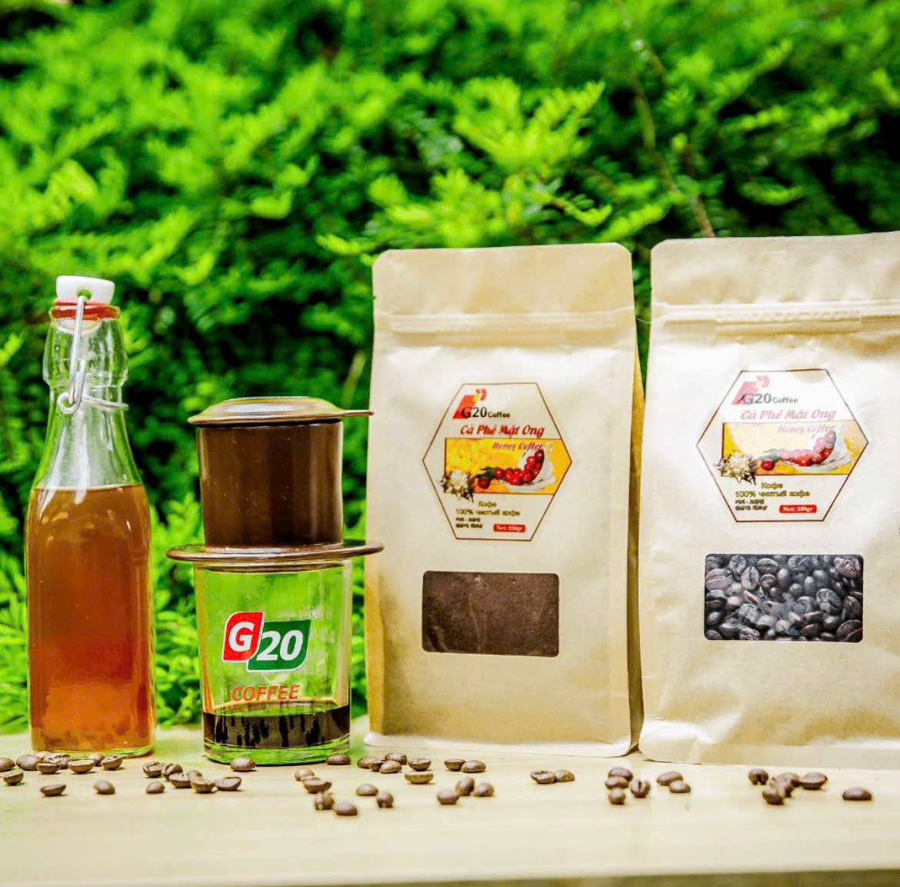

Cà phê
Cà phê Robusta Buôn Ma Thuột
Xuất xứ: Đắk Lắk
Hạt cà phê chín tay chín mọng, thơm nồng nàn đặc trưng của vùng đất bazan.
Xem chi tiết


Từ những vùng đất bazan màu mỡ, Tây Nguyên mang đến những sản vật mộc mạc, đậm đà và giàu bản sắc.
Khám phá sản phẩmTây Nguyên là vùng đất cao nguyên nổi tiếng của Việt Nam, nằm ở miền Trung Tây. Vùng đất này được đặc trưng bởi những cao nguyên rộng lớn, núi rừng xanh thẳm, và đất đỏ bazan giàu dinh dưỡng.
Với khí hậu mát mẻ và độc đáo, Tây Nguyên là vùng sản xuất nông nghiệp chính của Việt Nam. Từ những hạt cà phê thơm ngon, hạt hồ tiêu cay nồng, đến mật ong tinh khiết và các loại mắc ca quý hiếm, mỗi sản phẩm đều mang trong mình câu chuyện về vùng đất và con người nơi đây.
Đặc sản Tây Nguyên không chỉ là những sản phẩm chất lượng cao, mà còn là linh hồn của một vùng đất nhiều tình người, nơi hòa quyện giữa thiên nhiên hoang dã và công lao chân tay của những người dân.
Tây Nguyên sở hữu những vùng đất đỏ bazan màu mỡ, giàu dinh dưỡng thiên nhiên. Đây là nền tảng tuyệt vời cho sự phát triển của nông sản chất lượng cao.
Cà phê, hồ tiêu, mật ong, mắc ca... mỗi sản vật đều mang hương vị đặc trưng riêng, phản ánh đúng bản chất tự nhiên và công lao của người trồng trọt.
Vùng đất này giữ gìn những nét văn hóa bản địa độc đáo và truyền thống canh tác bền vững, khiến mỗi sản phẩm đều mang giá trị con người sâu sắc.
Xuất xứ: Đắk Lắk
Hạt cà phê chín tay chín mọng, thơm nồng nàn đặc trưng của vùng đất bazan.
Xem chi tiết
Xuất xứ: Gia Lai
Mật ong tự nhiên thu hoạch vào mùa hoa cà phê nở rộ, vị ngọt dịu thanh mát.
Xem chi tiết